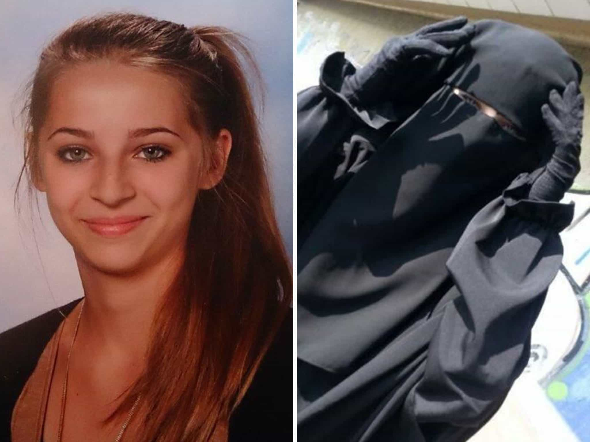
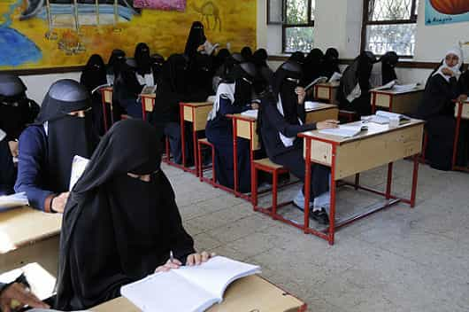

Just as you should not accept a sexually-used woman into your life, Western societies should never welcome back politically, culturally, and, yes, sexually-used former ISIS girls. One of these girls, teenager Linda Wenzel, is currently doing her best to sob and attract the attention of her native Germany in the hope of being given passage back to Europe.
Wenzel left her home in eastern Germany for Syria and Iraq in 2016, married a Chechen ISIS fighter, and was captured and jailed by government troops after they liberated Iraq’s second city of Mosul this year. She is currently awaiting trial in Baghdad. She may be executed for her involvement with ISIS.
I previously wrote that I was indifferent to the reported demise of Samra Kesinovic, a 17-year-old Bosnian-Austrian ISIS recruit who was apparently beaten to death in 2015 for trying to escape her new life in Syria. I am not for violence for the sake of violence, but the world is simply too big–and has far too many problems–for us to spend large amounts of time mourning the life of someone who willingly chose to join a terrorist group.

Samra Kesinovic willingly joined a group performing actual mass rape and then wanted to leave ISIS territory after being passed around as a “sex slave.” You can’t fix stupid.
Although we should support due process, Linda Wenzel’s firm support for ISIS is an open-and-shut case. What is arguable is whether she participated in the various acts of barbarity and cruelty attributed to her, such as seriously beating and torturing other ISIS women, or working as a sniper. Even if she was simply an ISIS bride, she should at the very least be left to rot in an Iraqi prison for the rest of her life.
Bringing the Linda Wenzels of the world back to Europe or other Western countries is a waste of money and diplomatic efforts, signaling to many other potential terrorists or terrorist supporters that they can join a violent death cult and then be welcomed home with open arms.
In our own nations, there are sufficient numbers of walking (or not walking) wounded to take up our focus already, not to mention major domestic terrorist threats. Linda Wenzel and others like her chose their fate and now they must accept it.
Accepting Linda Wenzel and others back will only encourage more ISIS recruits
You reap what you sow, Linda.
A clear message needs to be sent to would-be Western ISIS recruits everywhere–if you go, you won’t be allowed back. For the women, who might expect a customary pussy pass, the urgency to blast their expectations of returning home is especially needed.
ISIS may be well and truly on the back foot now, but how long can it last? Remember, too, that half a decade ago, the only Islamic terrorist groups most people knew of were Osama bin Laden’s al-Qaeda and perhaps Hezbollah and the al-Aqsa Martyrs’ Brigades. Even if we see ISIS vanquished in the next couple of years, a new sophisticated network is likely to take its place. The groundwork for dealing with the next spinoff of Islamic terrorisms needs to be laid now.
Thankfully, despite the terrible immigration and other policies of countries like Germany, only outliers like Denmark have openly supported returning ISIS fighters. To avoid any ambiguity, however, other governments must be unequivocal about refusing to admit Islamic terrorist members back into their territories. Because there is no way of knowing what these people have done, their mere membership of groups similar to ISIS should be enough for them to be turned away or jailed for life.
These girls chose a real patriarchy, so let them enjoy it

This is the super mild version of what Linda Wenzel, Samra Kesinovic and others chose when joining ISIS.
Oh, the irony. After years of women being falsely told that the West is an unmitigated and oppressive patriarchy, some have opted for the closest living thing to a literal definition of patriarchy: ISIS. Let them reap the rewards of their choice. Repatriating these creatures back to Europe, America, Britain, Canada, or Australia would be as dumb as dumb gets.
I can understand some attention being given to Linda Wenzel’s case by German diplomats, yet across the world we can be sure that many other Germans in criminal trouble need consular assistance, too. Unlike Wenzel, the guilt of many of these citizens is often seriously in question. With very finite resources at its disposal, the German government is sadly probably going to white-knight for a girl who gladly joined an organization dedicated to murderous acts in Germany ([1] [2]).
We should not condone gratuitous violence against captured ISIS girls like Linda Wenzel, but they have simply lost their “right” to go home. They are broken women and do not belong in the West.
Read More: Who Cares If Islamic State Bride Samra Kesinovic Was Killed For Trying To Escape?